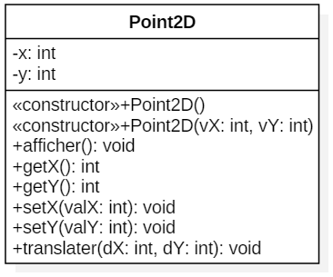

Ajout des constructeurs dans Point2D.
Reprenez votre classe Point2D.
Ajoutez deux constructeurs qui respectent les contraintes suivantes :
Pensez à chainer vos constructeurs, du plus bête vers le plus intelligent <=> les plus simples (ceux qui ont le moins de paramètres) appellent le plus complexe (celui qui a le plus de paramètres).
